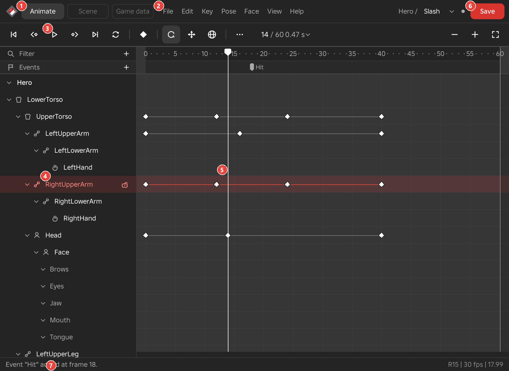

Timeline and Toolbar
The toolbar runs along the top of the Framez window. Under it, the track list and the timeline have a row for every limb, and extra rows for events, layers, faces and the other things an animation carries.

Toolbar
The toolbar sits under the menu bar and is faded until a rig is selected. A button that belongs to one workspace shows only in that workspace, so the Scene workspace has fewer posing buttons and a button for looking through a camera. In a narrow window the view switches fold into one More button.
Go to Frame 0 and Go to Last Key
- Shortcut
- Home for frame 0, End for the last key
- Workspace
- All
The first transport button moves the playhead to frame 0, and the last one moves it to the last key of the animation. The last key is the latest key on any limb. In a scene it also counts the keys of every scene item and the end of the scene's sounds. An animation with no keys goes to its end instead. Playback stops at the same frame the last button reaches.
Previous Key and Next Key
- Shortcut
- ← and →
- Alt+← and Alt+→ step by frames
- Shift+← and Shift+→ move the selected limb's keys
- Workspace
- All
These two buttons move the playhead to the nearest key before or after it, on any limb, so you can move through an animation pose by pose without counting frames. When there is no key in that direction the status line says so.
Hold Alt to move the playhead by single frames instead. Hold Shift to move the keys instead of the playhead. The whole track of the selected limb then moves one frame earlier or later, which is the same as the Move 1 frame earlier and Move 1 frame later commands.
Preferences sets how far one press goes. Key jump is the number of keys one press moves, from 1 to 20, and Frame step is the number of frames one Alt press moves, from 1 to 100.
See Also
Key Jump, Frame Step and Track.
Play and Stop
- Shortcut
- Space
- Workspace
- All
The play button plays the animation from the playhead at the animation's frame rate, and turns into a stop button while it plays. Playback follows real time, and when the screen refreshes faster than the animation's frame rate the rig is posed between whole frames, so fast motion stays smooth. It stops at the last key, unless the animation loops, in which case it wraps round to the start. Pressing play while the playhead is on the last frame starts again from frame 0.
When a stretch has been chosen to play, by Play only the selected keys or by playing a bookmarked range, playback loops that stretch round and round whatever the animation's own loop setting is. The Speed box of the frame counter slows playback down or speeds it up without changing the animation.
One key on a limb is a pose held for the whole animation, so the rig does not move. Pressing play on an animation where no limb has two keys says "Nothing to play: key two frames."
See Also
Loop
- Menu
- Key ‣ Loop ‣ Looping
- Shortcut
- Tab
- Workspace
- Animate
The loop button switches Looping on or off for the animation. The setting is saved with the animation and is what the game uses, so a cycle that plays round in Studio also plays round in the game. The button is lit while Looping is on, and the status line says to save to keep the change.
See Also
Looping and Make Cyclic.
Key
- Menu
- Key ‣ Insert key
- Shortcut
- K
- Workspace
- Animate, Scene
The key button keys the selected limb at the playhead, exactly as it stands, which is the same as Insert Key. If no limb is selected the status line asks you to click one. In a scene with a camera, prop or light selected, the button keys that item instead.
Rotate and Move
- Menu
- Pose ‣ Rotate
- Pose ‣ Move
- Shortcut
- R switches between them
- Workspace
- Animate
These two buttons choose what the handles on the selected limb do. In Rotate mode the limb is surrounded by rings, and dragging a ring turns the limb about that axis. In Move mode the limb shows arrows, and dragging an arrow moves it along that axis. The button of the active mode is lit, and pressing R switches from one to the other. With Auto key on, which is the default, a drag keys the limb at the playhead.
The size of the rings and arrows is set in Preferences.
See Also
Handle Size and Auto Key.
World Axes
- Menu
- Pose ‣ Posing ‣ World space
- Shortcut
- Ctrl+L
- Workspace
- Animate
The world axes button makes the rings and arrows act along the world's axes instead of the selected limb's own axes. It is lit while World space is on. The status line says World space or Local space when you switch, and Framez remembers the choice the next time you open Studio.
See Also
IK Legs
- Workspace
- Animate
The IK legs button makes a dragged foot bend the knee, so you pose a leg by placing the foot. Turning it on also keeps feet planted while you pose. The button is lit while it is on, and Framez keeps the choice with your other posing options. The same switches are on the Posing page of the Inspector.
See Also
Onion Skin
- Menu
- View ‣ Overlays ‣ Onion skin ‣ Show onion skin
- Right-click
- The button
- Workspace
- Animate
The onion skin button shows the rig at the keys on either side of the current frame as ghosts, so you can judge how a pose sits between its neighbours. Only the parts that differ from the rig's current pose are drawn, and the ghosts follow your edits as you make them.
Right-clicking the button opens the ghost choices, which are At keys, Every 2 frames, Every 4 frames and Selected limb only, then Onion settings, and under them the capture rows that keep a pose as a ghost for later.
See Also
Onion Skin and Onion Captures.
Motion Paths
- Menu
- View ‣ Overlays ‣ Motion paths ‣ Show motion paths
- Right-click
- The button
- Workspace
- Animate
The motion paths button draws the path that the hands, feet, head, weapon tip and torso travel along over the animation. Right-clicking it opens the choices for which parts get a path, whether paths are coloured by limb or by speed, whether they cover the whole animation or only the frames round the playhead, and what dragging a dot on a path does.
See Also
Reference Video
- Menu
- View ‣ Windows ‣ Reference video
- Workspace
- Animate
- Needs
- The Framez Helper, for video files
The reference video button opens and closes the Reference video window, which plays a recording or a set of numbered image frames beside the timeline.
See Also
Curve Editor
- Menu
- View ‣ Windows ‣ Curve editor
- Workspace
- Animate
The Curve editor button opens and closes the Curve editor window, which draws each channel of the selected limb as a curve and shows how fast the limb moves.
See Also
Show or Hide Handles
- Menu
- View ‣ Overlays ‣ Handles
- Right-click
- The button
- Shortcut
- P
- Workspace
- All
The eye button hides the rings, arrows and limb boxes so that you can watch the animation as it will look, and shows them again. Hiding the handles also turns off onion skin and brings it back with the handles if it was on. Nothing is deselected, so pressing P twice returns you to exactly where you were.
Right-clicking the button opens the list of overlays, each with a tick, in the groups Rig, Motion and Scene. The list stays open while you tick several.
See Also
Look Through Camera
- Menu
- Scene ‣ Look through camera
- Shortcut
- C
- Workspace
- Scene
The camera button shows the viewport through a camera of the scene, so you see the shot as the game will. It is dimmed until the scene has a camera, and lit while you are looking through one.
See Also
More
- Workspace
- All
When the Framez window is narrower than about 960 pixels, the view switches of the toolbar fold into one More button. Its list shows the same switches with a tick when they are on. They are IK legs, Onion skin, Preview, which hides the handles, Motion paths, Reference video and Curve editor. The playback and keying buttons stay where they are.
See Also
Frame Counter and Zoom
Frame Counter
- Workspace
- All
The frame counter in the middle of the toolbar shows the playhead's frame, the animation's length in frames and the playhead's time in seconds, for example 14 / 60 and 0.47 s. Click it to open a small box where you can type a frame to go to, change the length of the animation, or set the playing speed.
Options
- Frame
- The frame to go to. Type
24or24ffor a frame number,0.4sfor a time in seconds, or0:24for 0 seconds and 24 frames. - Length
- How long the animation is. Type a number of frames such as
50, a time such as0.8s, or0:50. The length can be from 0.05 s to 600 s. Changing it does not move any key, and the timeline zooms to show the whole new length. - Speed
- How fast Framez plays the animation, from 0.05 to 4 times its normal speed. Type
0.5,2xor50%. The speed applies only while you work in Framez and is not saved with the animation.
See Also
Playback Speed sets the same speed from a menu.
Zoom Out, Zoom Slider and Zoom In
- Menu
- View ‣ Timeline zoom ‣ Zoom in, Zoom out
- Workspace
- All
The minus and plus buttons at the right end of the toolbar change how many frames fit across the timeline. Each click zooms about the middle of what is on screen, by a factor of 1.4. The slider between them zooms as you drag it, and a position further right shows fewer frames, down to a minimum of four frames. The slider zooms about the playhead, and it is hidden when the window is narrower than about 1150 pixels.
The mouse wheel zooms too. Scrolling over the timeline zooms about the frame under the pointer. Preferences sets how much one wheel notch zooms.
See Also
Timeline Zoom, Wheel Zoom and Zooming and Panning the Timeline.
Fit
- Menu
- View ‣ Timeline zoom ‣ Frame all
- Workspace
- All
The fit button at the far right of the toolbar zooms the timeline to show the whole animation, from frame 0 to its last frame.
Track List, Ruler and Keys
Track List
- Right-click
- A limb's name
- Workspace
- All
The track list on the left of the timeline has a row for each joint of the rig, nested the way the rig is built, so that every limb sits under the limb it hangs from. The rig's own row stays pinned at the top. A small arrow beside a row folds or opens everything below it, and the arrow on the rig's row folds the whole rig. The row of the selected limb is tinted red. Scrolling the mouse wheel over the list moves through the rows, and the timeline scrolls with it.
Clicking a limb's name selects the limb, and double-clicking the name keys the limb at the playhead. Double-clicking the rig's row keys every limb at once. Right-clicking a name opens the same menu as right-clicking the limb in the viewport. A padlock appears at the right end of the row under the pointer and of the selected row, and stays visible on a locked limb. A closed eye on a row marks a limb that has been hidden in the viewport.
The Filter box at the top of the list shows only the tracks whose names contain the text you type, as a flat list. The plus button at its right end opens the list of things that can be added to a scene, which is the same list as the Add rows of the Scene menu.
Example
For example, a rig of many joints is hard to scan, so typing "arm" in the Filter box leaves only the arm tracks to work on.
See Also
Locking a Limb, Track Groups and Add.
Ruler and Playhead
- Workspace
- All
The ruler runs along the top of the timeline. Its numbers are frames, spaced a round number apart that suits how many frames are on screen, with a dot for each frame between them. The band behind the numbers is dark across the animation's length and lighter beyond its end, where the rows are also dimmed, and a thin line marks the last frame.
The playhead is the white line with a white marker on the ruler. It marks the frame the viewport shows. Clicking the ruler moves the playhead there, and if a key is within a few pixels of the click the playhead lands on that key. Dragging along the ruler reaches any frame, with no snapping, so you can scrub through the animation.
Under the numbers the events lane shows the events of the animation, and a bookmarks lane appears under it once the animation has a bookmark.
See Also
Keys
- Right-click
- A key on the timeline
- Empty space in the rows
- Workspace
- All
Each key is a diamond on its limb's row, at its frame. A white diamond is a key, a blue one is a breakdown, which is a pose between two keys that shapes the move, and a small grey one is a generated key, which Framez made from the motion. A selected key is red and slightly larger. A thin line joins the first and last key of a track, and a key set to Hold shows a bar up to the next key, because it keeps its pose until then. Keys packed closer together than a diamond is wide merge into a rounded bar with a key at each end.
Options
- Click a key
- Selects the key, selects its limb and moves the playhead to its frame. Shift+click adds the key to the keys already selected. A click on empty space in the rows clears the selection.
- Drag a key
- Moves it in time. When several keys are selected they move together and keep their distances. A key cannot go before frame 0 or past the end, and it stops short of a frame that already has a key. The status line reports the frame where it stopped.
- Drag on empty space
- Draws a box and selects every key inside it, on every row the box crosses. Keys of locked limbs are not selected.
- Right-click a key
- Opens a menu with Easing, Copy, Paste, Delete, Select track and Scale keys, and the submenus Slider, key type and Range. The right-click first selects the key, its limb and its frame, so every item acts on that key.
- Right-click empty space
- Moves the playhead to that frame and opens a menu for it, with commands to insert keys on all limbs, copy and paste the pose, select keys, scale keys, and add an event, an impact frame, a flash or a bookmark.
A limb that is locked cannot have its keys selected or moved. Pressing one of its keys selects the limb and goes to the frame, and the status line says to unlock the track first.
Example
For example, drag a box round the keys of a punch and then drag one of them later by eight frames to slow the whole motion's start, because the selected keys move together.
See Also
Locking a Limb
- Menu
- Key ‣ Track ‣ Lock track
- Right-click
- A limb ‣ Track ‣ Lock track
- Workspace
- Animate
A locked limb is protected from your edits. You cannot select the limb or its keys, and moving, scaling, easing and deleting all leave its keys alone, while the limb keeps playing the keys it has. A locked limb with no keys stays in the pose it had when you locked it. Lock a limb from the padlock on its row or from its Track menu. The same command unlocks it, and a lock is one undo step.
Example
For example, lock the legs of a finished walk before you work on the arms, so a stray drag or a box selection cannot change them.
See Also
Zooming and Panning the Timeline
- Workspace
- All
Scrolling the mouse wheel over the timeline zooms in or out about the frame under the pointer, so the frame you are looking at stays where it is. Once the timeline shows only part of the animation, a pan bar appears under the rows. Its grip is the part of the animation that is on screen, and dragging the grip along the bar moves the view earlier or later. The toolbar's buttons and slider zoom without the pointer.
See Also
Rows of the Timeline
Besides the limbs, the timeline can show other rows between and under the rig. A row appears when the animation has something to put in it, and some rows belong to one workspace.
Events Lane
- Menu
- Game ‣ Add event here...
- Right-click
- An event pin
- Workspace
- All
The events lane runs under the ruler numbers, beside the Events row of the track list. Each event is a pin with its name written next to it, and events on one frame share a pin. Drag a pin to move its events to another frame, double-click it to rename it, or right-click it to rename or delete it. The plus button on the Events row adds an event at the playhead.
Other tools mark the same lane too. Red marks show frames where a foot slides, a red band on the ruler shows a range chosen to play, and a line of red text names the layer being keyed when an animation layer other than the base is active.
See Also
Bookmarks Lane
- Menu
- View ‣ Bookmarks ‣ Add bookmark here...
- Right-click
- A bookmark
- Workspace
- Animate
Bookmarks are named, coloured frames or ranges that help you find your way round a long animation. They sit in a lane under the events lane, which appears once the animation has a bookmark. They are never written into the animation the game plays. The commands for them are described under Bookmarks Lane.
Face Rows
- Right-click
- A face key
A head whose face is a Decal gets a face row directly under the Head row. Each face key shows the face itself, its name and how many frames it holds, with a grey bar to the next key, or a thin line when it returns to the rig's own face. A head with separate Eyes and Mouth Decals gets a row for each. Click the empty lane to set a face at that frame. Drag a key to move it and double-click it to change its face. Right-clicking a key offers Change face, Copy face, Paste face here and Delete face key. In a scene each rig has its own face keys, saved with its own animation, and the rigs you are not posing keep their faces as the timeline moves.
A head with its own face controls gets a row for each control that has keys instead, and the row's menu can show every control. Lip sync adds a row of its own.
See Also
Layer Weight Row
- Right-click
- A weight key, or the row
- Workspace
- Animate
An animation layer's weight says how strongly the layer applies, from 0 to 100 percent. The layer weight row, under the rig, draws that weight over time for the layer you are keying and for every other layer that has weight keys. The foot of the row is 0 percent and the head is 100 percent, and each weight key is a diamond. Before the first key and after the last, the weight holds.
Drag a weight key to change its frame and its weight together, or hold Shift to change only the weight. Double-click a key to type its weight. Right-click a key to choose its weight, to choose Smooth, Linear or Hold for the stretch up to the next key, or to delete it. Right-click the row itself to key the weight at that frame or to remove every weight key.
Example
For example, a layer that adds a flinch to an idle can fade in over five frames and fade out again by keying its weight at 0, 100 and 0 percent.
See Also
Modifiers Row
- Right-click
- A bar
- Workspace
- Animate
Once a tool such as a cycle or a clean-up filter has been run, the animation gets a Modifiers row under the rig. Its name shows how many results the animation holds, and each result is a bar spanning the frames it works on. Dragging a bar moves the result in time or changes its frames, and the selected result also gets a strength lane under the row. The row and its lane are described in full under Modifiers Row.
See Also
Hit Windows and Foot Contacts Rows
- Right-click
- A bar, or the row
- Workspace
- Game data
The Hit windows row shows each hit window as a bar, coloured by its kind, with overlapping windows stacked. The Foot contacts row shows each foot contact as a strip for each foot, L and R, with a bar while that foot is down. Right-clicking either row adds an item at that frame.
Options
- Hit window bar
- Drag the middle to move the window and an end to trim it. Right-click it for Go to its start, Kind, Edit hitbox in the view, Duplicate and Delete.
- Foot contact bar
- Drag the middle to move the contact and an end to trim it. Right-click it to delete it.
Parent Row
- Right-click
- A block
A limb, a whole rig, a held object, a prop or a camera that has parent switches gets a row named after it with the word parent, such as RightHand · parent. The row shows which part the item follows, and when that changes. Each switch is a block named for its parent and coloured to match. World, which means the item stays put, is grey, and a parent that no longer exists is red. Click a block to go to that switch, or right-click it to change it.
See Also
Track Groups
- Menu
- View ‣ Windows ‣ Track groups
- Right-click
- A group's row
- A limb ‣ Track ‣ Group
- Workspace
- All
A rig with many joints lists its tracks in groups, one for each branch of the rig, such as Body, Tail or Thigh.L, and any group you make yourself. Groups turn on by themselves for rigs with mesh bones or with 25 joints or more, and Track groups switches them on or off for the open rig.
Options
- Click a group's row
- Folds or opens the group. A folded group still shows the selected joint.
- Double-click a group's row
- Keys every joint in the group at the playhead. The row's lane shows where any of its joints has a key.
- The eye on a group's row
- Hides the group's joints in the viewport.
- Right-click a group's row
- Offers Key every joint here, Only this group, Show all, Fold all groups, Open all groups, Rename and Ungroup for groups you made, and Tracks as a tree.
- Right-click a limb, then Track ‣ Group
- Offers Track groups, New group, New group with all below, Put in a group, which lists up to five of your groups, and Leave group.
Example
For example, a creature with dozens of bones can keep a tail's joints in one group and fold it while the legs are animated.
Subtitles Row
- Menu
- Scene ‣ Add ‣ Subtitles
- Right-click
- A subtitle block
- Workspace
- Scene
The Subtitles row sits after the scene's items and holds one block for each subtitle line, coloured by who says it. Drag a block to move the line and drag its end to trim it. Double-click the row to add a line at that time.
See Also
Subtitles and Subtitle Lines.
Clips Row
- Right-click
- A clip block, or the row
- Workspace
- Scene
Once an animation has clip blocks, a Clips row appears under the posed rig, above its body parts. Each block is a saved animation that plays over your keys. The block shows its name, a notch for each loop it makes, its blend ends, and a bar where it holds its last pose. Drag the middle of a block to move it and an end to trim it, hold Alt while dragging the right end to loop the animation, and hold Ctrl while dragging it to change the speed. Two blocks that overlap crossfade. Right-clicking a block or the row opens the commands for it.
See Also
Squash and Stretch Row
- Right-click
- A squash key
A part that has squash and stretch keys gets a Squash and stretch row under it, and the whole body's size keys have a row of their own, called Whole body squash, under the first body row. Drag a key on the row to move it in time, or right-click it for its easing or to delete it. The sizes are saved as markers that the game reads, so the effect plays in the game once the effects script has been added.
See Also
Scene Rows
- Workspace
- Scene
In the Scene workspace every item of the scene is a row at the top of the track list, drawn with a figure for a rig, a box for a prop, and an icon each for a camera, a light, a sound, a screen effect, a scene look, an effect and a path. The rig you are posing is open with its limbs, and the other rigs stay folded into one lane of diamonds. A camera opens to its Place and Field of view, a light to its Brightness, Colour and Range, and a sound is a block you can move along the timeline. When the scene has two cameras, a Shots row of blocks shows which camera the game sees at each moment. A prop or camera that follows a part shows a mark where each follow starts or stops, and a thin bar along the frames it follows.
See Also
Scene Menu and Shots.